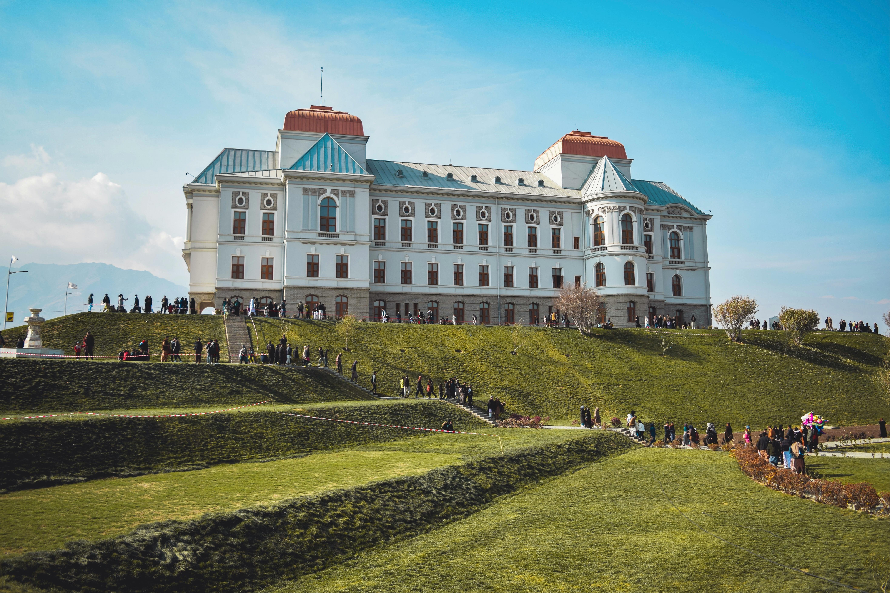

Afghanistan Attractions
Afghanistan Attractions is a tourism website designed to showcase the natural, historical, and cultural wonders of Afghanistan. Its aim is to present a beautiful, rich, and often overlooked image of the country to both local and international audiences. Through detailed information, inspiring visuals, and comprehensive descriptions of tourist destinations, Afghanistan Attractions offers a fresh perspective for those interested in exploring the heritage and landscapes of this unique land.
“Travel isn’t always about going far. Sometimes it’s about seeing your homeland with new eyes.”
Why Visit Afghanistan?
- Discover breathtaking natural landscapes
- Explore ancient historical sites
- Learn about diverse Afghan culture and heritage
Darul Aman Palace, Kabul

Darul Aman Palace, built in the 1920s under King Amanullah Khan,
is a symbol of Afghanistan’s drive for modernization. Designed in
a neoclassical European style, the palace once stood as a center
of reform and progress. Over the decades, it suffered heavy damage
due to war and political unrest.
In recent years, the palace was fully restored and reopened in
2019. Today, it stands proudly as a cultural landmark in Kabul,
welcoming visitors to witness Afghanistan’s rich history and
architectural heritage.
Band-e Amir, Bamiyan
Band-e Amir is Afghanistan’s first national park, located in the
central highlands of Bamiyan province. It consists of a series of
stunning deep blue lakes, formed naturally by mineral-rich water
and surrounded by majestic mountains. The breathtaking beauty and
peaceful atmosphere of Band-e Amir make it one of the country’s
most iconic natural attractions.
Recognized for its ecological and cultural significance, the area
attracts both domestic and international tourists seeking nature,
serenity, and adventure in the heart of Afghanistan.
Herat – The Cultural Heart of Western Afghanistan
Herat, one of Afghanistan’s oldest and most historically rich
cities, is a treasure trove of Islamic architecture, art, and
culture. From the majestic tomb of Khwaja Abdullah Ansari in
Gazargah to the elegant Khwaja Parsa Mosque, Herat reflects
centuries of spiritual and architectural heritage. The towering
Herat Minarets, remnants of the ancient Musalla Complex, stand as
silent witnesses to the city’s glorious past.
With its vibrant bazaars, historic cityscapes, and deep-rooted
traditions, Herat continues to enchant visitors, offering a unique
glimpse into Afghanistan’s cultural soul.
Panjshir Valley – The Valley of Heroes

Panjshir Valley, nestled in the northeastern mountains of
Afghanistan, is renowned for its breathtaking natural beauty and
deep historical significance. Surrounded by snow-capped peaks and
lush greenery, the valley is a symbol of resilience and pride in
Afghan history. It is especially known as the homeland of Ahmad
Shah Massoud, the national hero, and has long been a center of
resistance and strength.
Today, Panjshir welcomes visitors with its serene landscapes,
flowing rivers, and a powerful spirit that echoes through its
mountains.
Bamiyan Buddhas – Silent Guardians of History
The Bamiyan Buddhas were two monumental statues carved into the
cliffs of the Bamiyan Valley over 1,500 years ago. Once standing
at 38 and 55 meters tall, these majestic figures represented the
rich Buddhist heritage that flourished in the region before the
arrival of Islam.
Though tragically destroyed in 2001, the empty niches where the
Buddhas once stood continue to tell a powerful story of ancient
civilization, cultural coexistence, and the resilience of history.
Today, the site is a UNESCO World Heritage Site and remains a
symbol of both loss and hope.